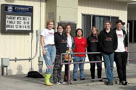
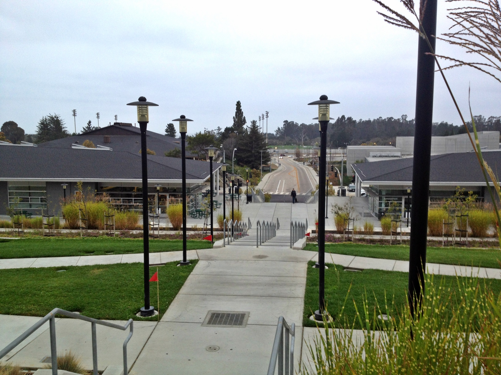

This table gives the names of the schools I've attended. The table also shows when I attended the school, and how many students go to the school. Feel free to visit the school websites for more information! Links are provided at the bottom of the page along with some pictures.
| School Name | Years Attended | Student Count |
|---|---|---|
| Cypress Charter High School | 2009-2010 & 2011-2012 | 152 |
| Aldo Leopold Charter High School | 2008-2009 & 2010-2011 | 210 |
| Cabrillo College | 2011-2015 | 15,500 |
| CSU Monterey Bay | 2015-2017 | 7,600 |
I consider these some of the most important skills I gained while in the Business Program:
These are some of the more recent classes I have taken:
Here are some pictures from the school websites!

Cypress Charter High School

Aldo Leopold Charter High School

Cabrillo College